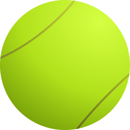

Tennis Progress Tracker
Overall Dashboard
Total Sessions Played:
0
Player Selection & Session Filtering
Select Player:
Both
Rasmus
Andreas
Show last
sessions
Update
Progress Over Sessions
Average Speed Over Sessions (km/h)
Accuracy Over Sessions (%)